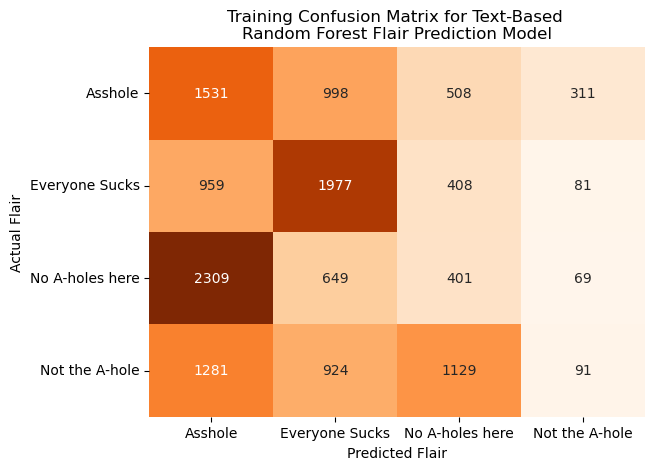
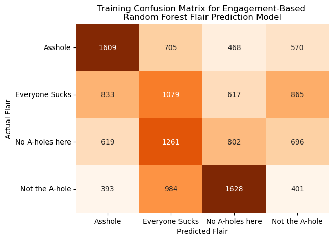
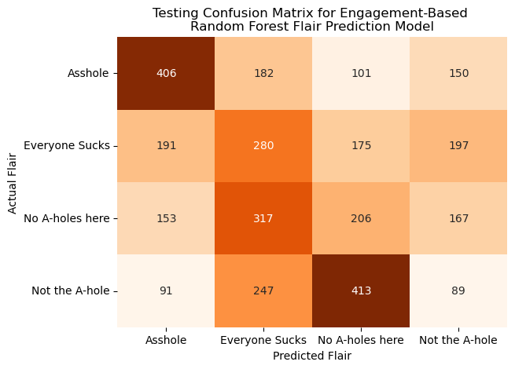

ML
Executive Summary
This section focuses on Machine Learning (ML) methods to answer our research questions. In particular, our first two goals for this section involve identifying characteristics of a Reddit post, while our last two goals are more text-based, involving Reddit post generation and summarization.
First, we focus on predicting which subreddit a post belongs to based on its text. We provide a Random Forest model for this classification task, as well as a baseline model for comparison. In doing so, we find significant improvement from the baseline model to the Random Forest model, with areas of improvement still to address.
Subsequently, we attempt to predict the flairs of posts in r/AmItheA**hole (r/AITA) using various possible predictors. We apply two Random Forest models using the text of posts in r/AITA and the user engagement on these posts, respectively. Similar to our first classification task, we find that these models perform better than a blind guess or baseline, but still have a lot of room for improvement.
Then, we aim to create a model that can generate stories for new Reddit posts. We train a recurrent neural network (RNN) with a Long Short-Term Memory architecture on text from a mix of top stories from various subreddits and popular books. While the model successfully generates text that demonstrates an understanding of basic linguistic structures, it has yet to produce fully cohesive stories, marking a significant step towards more complex narrative generation.
Lastly, we use two pre-trained models, one for summarization and one for sentiment analysis, to understand topics selected in the natural language processing portion of our project within the r/NoStupidQuestions subreddit. With the summarization model, we identify popular comments of interest and are able to greatly reduce the amount of text while keeping the meaning of the comment. Additionally, the sentiment analysis model is able to effectively classify the sentiment of the comments in a subreddit, furthering our understanding of the discourse in the r/NoStupidQuestions subreddit.
Overall, these studies highlight the challenges and progress in using ML for subreddit content analysis, demonstrating advancements from simple probabilistic approaches to more sophisticated models like Random Forest and RNNs. The models have varying degrees of success, suggesting room for further improvement in these areas.
Analysis Report
Subreddit Prediction
For our subreddit prediction task, we aim to take only the textual content of a post and classify the subreddit to which that post belongs. By using the 500 most common words across all posts, we hope to obtain important textual information that helps us determine which subreddit a post belongs to. For instance, the word “relationship” may be much more likely to appear in the r/relationship_advice subreddit than any others.
Baseline Model
Before we dive into complex Machine Learning models, though, we start with a baseline model. The baseline model provides us with a point of comparison for our more complex Machine Learning models, allowing us to evaluate the performance of those models in comparison to the simple baseline. Our baseline model is very naïve - it simply predicts subreddits with probability equal to the proportion with which they make up the training dataset. For instance, if 50% of our training dataset contains observations from r/relationship_advice, 30% from r/NoStupidQuestions, and 20% from r/TrueOffMyChest, our baseline model will predict that a post belongs to the subreddit r/relationship_advice with probability 0.50, the subreddit r/NoStupidQuestions with probability 0.30, and the subreddit r/TrueOffMyChest with probability 0.20. In this case, of course, the model has 12 subreddits to choose from, each with their own associated probabilities. Note that the baseline model does not consider additional information, such as the textual content of the post, because it is so simple.
Below, in Figure 1, we can see the results of the model predictions on the training data. As expected, the model predicts the more prevalent subreddits, such as r/relationship_advice and r/NoStupidQuestions, more often. Since the model only predicts subreddits proportionally to how they appear in the training data, it does not do a good job of actually identifying these subreddits correctly. In fact, its expected classification accuracy is equal to the sum of the squares of the probabilities with which each subreddit occurs, which amounts to approximately 0.20.
Below, in Figure 2, we can see the results of the model predictions on the testing data. As expected, the model’s performance on the testing set is no different than on the training set. We find the same characteristics, with the model performing quite poorly.

Below, in Figure 3, is a summary table of the performance metrics for the baseline model on both the training and testing sets. Each metric reports values of approximately 0.20, which is to be expected with such a simple model. We look to improve this performance with a Random Forest model below.
Random Forest Model
In order to predict the subreddit to which a post belongs more effectively, we turn to the Random Forest.
Below, in Figure 4, we can see the results of the model predictions on the training data. Here, we find that the performance of the model seems to outperform that of the baseline model, but still has its downfalls. The model predicts the two most prevalent subreddits, r/relationship_advice and r/NoStupidQuestions, nearly every time, failing to predict any of the less prevalent subreddits. In this sense, the model is vastly underperforming, as it is heavily biased to the subreddits that it has seen more often.

Below, in Figure 5, we can see the results of the model predictions on the testing data. As expected, the model’s performance on the testing set is no different than on the training set. We find the same characteristics, with the model performing well in some aspects, but with plenty of room for improvement.
Below, in Figure 6, is a summary table of the performance metrics for the Random Forest model on both the training and testing sets. Each metric reports values of approximately 0.50, which is a great improvement over the baseline model. However, we feel that further improvements can be made in order to achieve higher performance on our subreddit prediction task.
Random Forest Model - Balanced Classes
Random Forest Model - Class Subset
The code used for this section is available here.
Flair Prediction Using Random Forest Classification
In this section we attempted to predict what flair is assigned to posts in r/AmItheA**hole (r/AITA) based on various different predictors using a Random Forest (RF) model to attempt to predict how Redditors “judge” these stories posted on r/AITA. We then compared these models with their varying predictors and compared them to a baseline model (random chance).
The first RF model we applied to the r/AITA data using token counts of the five hundred most common words which were extracted using CountVectorizer in the NLP section previously. We chose fifty trees as our hyperparameter to be used across all models used in this section to allow for consistent comparisons. However, due to the imbalanced nature of the r/AITA posts (as established in the EDA section of this project), the dataset was downsampled so that none of the four primary flairs (A**hole, Not the A-hole, Everyone Sucks, No A-holes here) are overrepresented to the extent that they would significantly hinder model performance. After a training and testing data split, the model was trained on the training subset and various model metrics were calculated for both the training and testing subsets via a SparkML pipeline. Measures and visualizations of this model’s efficacy are displayed below.


Based on the metrics above, this model did not predict the flairs of these posts particularly accurately, but performed better than a blind random guess, which would have a theoretical accuracy of 25% compared to our model’s ~30-40%. For both the training and testing subsets, the model did an extremely poor job at predicting “Not the A-hole posts”. This model does perform reasonably well when predicting “Everyone Sucks” and “Asshole” flaired posts, but does not predict the posts with the more positively connoted flairs (No A-holes here and Not the A-hole).
Another potential set of predictors we identified were measures of user engagement, namely post “score” (number of upvotes minus number of downvotes) and the number of comments under a post. We applied a similar model using these predictors via another SparkML pipeline and compared them to the previous text-based model. The measures of model performance and confusion matrices are visualized below as such.


As shown above, this model performs fairly similarly to the previous text-based model but with some slight improvements in some of the model performance metrics along with more comparative performance metrics of the model for the training and test sets. This model more effectively predicted posts with the flairs “Asshole” and “Everyone Sucks” compared to the text-based model, but similarly struggled to correctly identify posts with more positive flairs. Ultimately, while this model does perform slightly better than the previous text-based model, especially at predicting the posts with more negative flairs attached, it still would not serve as an effective tool for accurately predicting these flairs on a larger scale. It is possible that these data are too homogeneous to be easily differentiated using a machine learning model, or using different models and/or hyperparameters may generate more accurate predictions.
We also include the evaluation metrics in Table 1 below:
| Metric | Engagement Training | Engagement Test | Text Training | Text Test |
|---|---|---|---|---|
| accuracy | 0.396378 | 0.396137 | 0.420226 | 0.329193 |
| f1 | 0.393809 | 0.392595 | 0.382704 | 0.28115 |
| precision | 0.395841 | 0.394806 | 0.459258 | 0.309424 |
| recall | 0.396378 | 0.396137 | 0.420226 | 0.329193 |
The code used for this section is available here.
Story Generation
Note
The saved model used for this section is available here.
In our project, we developed a story generation model using a recurrent neural network (RNN) model, which we built and trained using PySpark and PyTorch. To enhance the computation speed, we integrated CUDA into the process. Our data is the mix of top stories from various subreddits and popular books sourced externally, developed during the NLP portion of the project. The preprocessed portion of the dataset usable for training purposes is 1037 MB. We found that a smaller subset of 160.59 MB was adequate for the analysis.
The model’s architecture is based on a Long Short-Term Memory (LSTM) layer, which captures long-term dependencies in sequential data. In our setup, we defined hyperparameters such as the input size of 128, hidden state at 256, and used a two-layer LSTM. The model has 12,766,510 trainable parameters.
For the training process, we set the learning rate at 0.01, a maximum of 100 epochs, and a batch size of 64. To ensure the model didn’t overfit, we employed an early stopping mechanism with a patience of 5 epochs and a validation loss improvement threshold of 0.01. The Adam optimizer was chosen for optimization, paired with a cross-entropy loss function for calculating the model’s error rate. The total training time was 1h 41 mins.
The training and validation perplexities are shown in Figure 15:

To evaluate the model’s effectiveness, we focused on loss and perplexity. A lower perplexity value suggests a higher predictive accuracy of the model. The model achieved a test loss of 1.6227 and a perplexity value of 5.0667, indicating a strong performance in predictive capabilities.
We were ready to generate stories with the trained. Some examples are shown in Table 2:
| Prompt | Generated Text |
|---|---|
| Once upon a time | Once upon a time to of a cause the gachen friends these any olden lands. it was the school all as the sach could boypheal, and they letes saying cut that ended about the told the asking.the said she so a kyastellow specially will wrong me have a glories and how in s |
| The sun set over the ancient, whispering forest | The sun set over the ancient forest and the sating the told the thought the pressated the hassed has all she was hands and the and the and of didnt conday her that there you hands my like i was the and i was the told when and the put all into the done to the down the sately and stouse |
| The sound of sirens pierced the night | The sound of sirens pierced the night stack and the down, my fear that my bly and were expetes his slaring when it becheads icky that my feelt and want and contores she givated hours. we let me processings that i only and low that on a mord of the past finding to this because oulling th |
Although our model cannot yet generate cohesive stories, it’s important to recognize the success in the underlying process. The characters produced by the model consistently combine to form coherent words, an ability that demonstrates the model’s understanding of basic linguistic structures, a foundational step toward more complex story generation. This aspect of the model’s output aligns well with the objectives of our project.
The code used for this section is available here.
Top Comment Summary Generation
After all of the NLP work to identify comments that were scored high and contained the topic we had chosen, in this case comments related to COVID-19 in the subreddit r/NoStupidQuestions. We were successfully able to identify comments that we would be useful to summarize to better gain an understanding of the narrative in a particular subreddit. One example of this is below.
The model used to perform this summarization was a “facebook/bart-large-cnn” [1].
Before Summarization (After Stemming and removing StopWords):
I can understand that frustration and getting tired of the cynicism or generation of toxic beliefs, but it should be noted that about that bit from his 1999 special about the immune system and all that, his family has outright said:
Several times during the pandemic, Carlin has drawn attention for a routine from his 1999 special, “You Are All Diseased,” in which he mischievously suggests that a childhood spent swimming in the polluted Hudson River was the reason he didn’t catch polio.
(“In my neighborhood, no one ever got polio,” he fulminates. “No one, ever. You know why? ’Cause we swam in raw sewage. It strengthened our immune systems. The polio never had a prayer.”)
As Kelly Carlin explained, some viewers concluded — wrongly — that her father would have opposed coronavirus vaccines.
“Everyone’s like, see? George Carlin would have been anti-vaccination,” she said. “And I’m like, no. My dad was pro-science, pro-rational thinking, pro-evidence-based medicine. The man was a heart patient for 30 years. When he was a kid and the polio vaccine became available, he got the polio vaccine.”
…
In efforts to divine his opinion, some Carlin fans pointed to a 1990 interview he gave to Larry King, when he expressed his misgivings about the crude standup of Andrew Dice Clay: “His targets are underdogs, and comedy has traditionally picked on power — people who abuse their power,” Carlin said at the time.
Kelly Carlin said her father “always took the stand that more speech is better than less speech” and would have supported Chappelle’s right to perform the special. But, she added, “if you’re a comedian, you’ve got to be funny.”
After Summarization:
Carlin has drawn attention for a routine from his 1999 special, “You Are All Diseased.” He mischievously suggests that a childhood spent swimming in the polluted Hudson River was the reason he didn’t catch polio. Some viewers concluded — wrongly — that her father would have opposed coronavirus vaccines. “Everyone’s like, see? George Carlin would have been anti-vaccination,” she said. ’I’m like, no. My dad was pro-science,. pro-rational thinking, pro-evidence-based medicine.
The code used for this section is available here.
References
[1]
Lewis M, Liu Y, Goyal N, Ghazvininejad M, Mohamed A, Levy O, Stoyanov V, Zettlemoyer L. BART: Denoising Sequence-to-Sequence Pre-training for Natural Language Generation, Translation, and Comprehension. 2019 [accessed 2023 Nov 30]. https://arxiv.org/abs/1910.13461. doi:10.48550/ARXIV.1910.13461